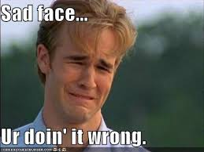

About Duy Trung Do
My name is Trung and I am jolly, friendly, and good-hearted.
My Classes This Quarter
- CS466 - Computer Security
- CS472 - Web Application Programming
- CS522B - Big Data
- CS575 - Required Practicum in CS Theory in Practice
My Favorist Movies
I actually don't watch too many movies, so here ... goes!
- Los ricos también lloran (IMDB)
- Director
- Rafael Banquells, Fernando Chacón
- Genre
- Drama, Romance
- Tagline
- 1 win & 1 nomination.more
- Plot Outline
- Verónica Castro, Rogelio Guerra, Rocío Banquells more
- Война и мир (IMDB)
- Director
- King Vidor
- Genre
- Drama, Romance, War
- Tagline
- Napoleon's (Herbert Lom's) tumultuous relations with Russia including his disastrous 1812 invasion serve as the backdrop for the tangled personal lives of two aristocratic families. Nominated for 3 Oscars. Another 5 wins & 10 nominations.more
- Plot Outline
- Audrey Hepburn, Henry Fonda, Mel Ferrer more
- The Gods Must Be Crazy (IMDB)
- Director
- Jamie Uys
- Genre
- Adventure, Comedy.
- Tagline
- A comic allegory about a traveling Bushman who encounters modern civilization and its stranger aspects, including a clumsy scientist and a band of revolutionaries. 2 wins & 3 nominations.more
- Plot Outline
- N!xau, Marius Weyers, Sandra Prinsloo more
My Moods
Happy:
Sad: 
Fun Facts About My Neighbors
- Sue Smith: Effervescent is a word that describe her.
- Bill Thompson: Loves playing Yu-Gi-Oh